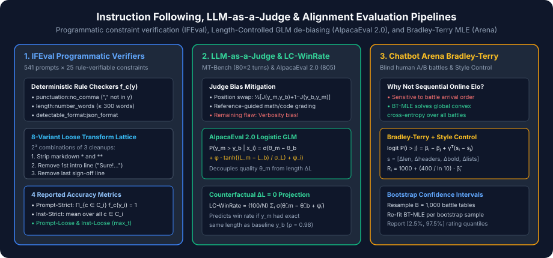

Instruction Following, Chat & Alignment Benchmarks: IFEval, MT-Bench, AlpacaEval 2.0 & Chatbot Arena
Programmatic constraint verification across IFEval's 8-variant loose lattice, LLM-as-a-Judge biases, Length-Controlled GLM de-biasing in AlpacaEval 2.0, and Bradley-Terry MLE with style control in Chatbot Arena.
After Supervised Fine-Tuning (SFT) and preference optimization (RLHF / DPO / GRPO), an LLM must follow complex formatting constraints, maintain multi-turn conversational coherence, and align with human helpfulness preferences. Unlike pretraining benchmarks where ground truth is a single token or numeric value, post-training responses are open-ended text generations.
To evaluate open-ended alignment rigorously without falling prey to superficial stylistic gaming, modern post-training evaluation combines three paradigms: deterministic programmatic constraint verification (IFEval), bias-corrected LLM-as-a-Judge (MT-Bench, AlpacaEval 2.0, Arena-Hard-Auto), and blind pairwise human preference modeling (LMSYS Chatbot Arena).

1. IFEval: Verifiable Instruction Following (Zhou et al., 2023)
Using an LLM judge to evaluate whether a model followed instructions conflates constraint satisfaction with prose fluency—and LLM judges themselves cannot reliably count 400 words or verify that a response contains zero commas.
IFEval (Instruction-Following Evaluation) isolates pure constraint compliance by constructing $N = 541$ prompts, each embedding $1$ to $3$ atomic, programmatically verifiable constraints drawn from $25$ instruction types across $8$ categories:
- Keywords:
existence(include keywords $w_1, w_2$),frequency(keyword $w$ appears $\ge k$ times),forbidden_words,letter_frequency. - Length Constraints:
number_words,number_sentences,number_paragraphs,nth_paragraph_first_word. - Detectable Formats:
json_format(valid `json.loads`),number_bullet_lists,constrained_response,number_highlighted_sections,multiple_sections. - Case, Punctuation & Start/End:
no_comma,english_capital,english_lowercase,end_checker(exact final phrase),quotation(wrapped in double quotes).
The 4 Official IFEval Metrics & The $2^3$ Loose Transformation Lattice
Let prompt $i \in \{1, \dots, N\}$ specify a set of constraints $\mathcal{C}_i = \{c_{i,1}, \dots, c_{i,m_i}\}$ ($|\mathcal{C}_i| \in \{1, 2, 3\}$, totaling $\sum_i |\mathcal{C}_i| = 834$ constraints across the $541$ prompts). Each constraint $c$ is paired with a deterministic Python boolean function $f_c(y) \in \{0, 1\}$.
IFEval distinguishes along two orthogonal axes:
-
Granularity (Prompt-Level vs. Instruction-Level):
$$\operatorname{Acc}_{\text{prompt-strict}} = \frac{1}{N}\sum_{i=1}^{N} \prod_{c \in \mathcal{C}_i} f_c(y_i), \qquad \operatorname{Acc}_{\text{inst-strict}} = \frac{\sum_{i=1}^{N}\sum_{c \in \mathcal{C}_i} f_c(y_i)}{\sum_{i=1}^{N} |\mathcal{C}_i|}$$Prompt-level accuracy requires every constraint in a multi-constraint prompt to pass simultaneously.
-
Tolerance (Strict vs. Loose via $2^3 = 8$ Candidate Variants): Chat-tuned models frequently prepend conversational boilerplate (
"Sure! Here is the JSON you requested:") or wrap text in Markdown bold tags (`**`), causing strict format or word-count checks to fail due to a single wrapper line. IFEval's Loose metric defines three binary string transformations:- $t_{\text{md}}$: remove all Markdown `*` and `**` symbols.
- $t_{\text{first}}$: remove the first line of the response.
- $t_{\text{last}}$: remove the last line of the response.
$$f_c^{\text{loose}}(y_i) = \max_{y' \in \mathcal{T}(y_i)} f_c(y')$$
2. LLM-as-a-Judge & Multi-Turn Evaluation: MT-Bench (Zheng et al., 2023)
While IFEval verifies structural rules, it does not evaluate whether the content of the response is helpful, insightful, or coherent across follow-up turns. MT-Bench introduced $80$ curated multi-turn prompts ($10$ in each of 8 categories: Writing, Roleplay, Extraction, Reasoning, Math, Coding, STEM, and Humanities). Every conversation consists of an initial question $x^{(1)}$, the model's first response $y^{(1)}$, a predetermined follow-up question $x^{(2)}$ that references $y^{(1)}$, and the model's second response $y^{(2)}$, scored on a $1\text{--}10$ scale by a frontier LLM judge.
The 4 Systematic Biases of LLM Judges
Zheng et al. (2023) documented four systematic failure modes when using an LLM as an automated evaluator:
- Position Bias: In pairwise comparisons $(y_A, y_B)$, LLM judges exhibit a strong preference for whichever response appears in slot 1 (or slot 2). Standard harnesses neutralize position bias by running the judge twice—once with $(y_A, y_B)$ and once with $(y_B, y_A)$—and averaging the win probabilities or declaring a tie if the two orderings disagree.
- Verbosity / Length Bias: Judges consistently reward longer, visually dense responses (bullet points, bold headers, polite sign-offs) even when the additional paragraphs repeat existing points or introduce fluff.
- Self-Enhancement Bias: A judge model assigns systematically higher scores to outputs generated by models from its own model family (whose token distribution and formatting style match the judge's own prior).
- Limited Math/Code Verification Capacity: When grading reasoning, math, or coding prompts on appearance alone, a judge is easily fooled by confident, well-formatted derivations containing an arithmetic error on line 6. MT-Bench mitigates this by switching to a Reference-Guided Judge Prompt on Math, Reasoning, and Coding items, supplying a verified ground-truth solution to the judge before scoring.
3. AlpacaEval 2.0 & Length-Controlled Win Rate (Dubois et al., 2024)
AlpacaEval 2.0 evaluates a candidate model $m$ against a fixed reference baseline $b$ (`gpt-4-turbo`) across $N = 805$ open-ended instructions. However, early leaderboards revealed that simply appending "Provide a comprehensive, detailed response with markdown sections" to a system prompt inflated raw AlpacaEval win rates by $+10\%$ to $+18\%$ without improving true capability.
To eliminate verbosity gaming, Dubois et al. (2024) introduced Length-Controlled AlpacaEval (LC-AlpacaEval). They model the LLM judge's pairwise preference probability $q(y_m \succ y_b \mid x_i)$ using a logistic Generalized Linear Model (GLM) with three additive terms:
where $\sigma(z) = (1 + e^{-z})^{-1}$ and $\sigma_{\Delta L}$ is the empirical standard deviation of length differences across the dataset. After fitting $(\hat{\theta}_m, \hat{\phi}_{m,b}, \hat{\psi}_i)$ via regularized maximum likelihood (with $L_2$ penalty on $\phi_{m,b}$ so true quality is not absorbed into length when a better model naturally writes slightly more), LC-AlpacaEval answers a counterfactual query: What win rate would model $m$ achieve if its outputs had the exact same length as the baseline ($\operatorname{len}(y_m) - \operatorname{len}(y_b) = 0$)?
Notice that because $\tanh(0) = 0$, the length term vanishes identically! This simple counterfactual de-biasing boosted AlpacaEval's Spearman rank correlation with human Chatbot Arena ratings from $\rho = 0.94$ to $\rho = 0.98$.
4. LMSYS Chatbot Arena: Bradley-Terry MLE vs. Sequential Elo
LMSYS Chatbot Arena (Chiang et al., 2024) is the gold-standard human evaluation platform: a user enters any prompt $x$, observes two anonymous side-by-side completions $(y_A, y_B)$ from randomly paired models $(m_i, m_j)$, and votes before model identities are revealed.
Why Chatbot Arena Replaced Online Sequential Elo with Bradley-Terry MLE
In classical chess Elo, ratings are updated sequentially after each match $t$: $R_i^{(t+1)} = R_i^{(t)} + K(S_{ij}^{(t)} - E_{ij}^{(t)})$. However, sequential Elo is non-stationary and order-dependent: permuting the chronological order of the exact same set of battles changes the final ratings, giving disproportionate weight to whichever matches happened last.
Chatbot Arena instead treats all $M$ recorded human battles as an i.i.d. dataset and computes the joint Bradley-Terry Maximum Likelihood Estimate (BT-MLE). Under the Bradley-Terry model with base-$10$ scale factor $S = 400$, the probability that model $i$ beats model $j$ is:
Let $W_{ij}$ denote the effective number of times model $i$ defeated model $j$ (counting ties as $0.5$ wins for both $i$ and $j$). The global log-likelihood over all model pairs is strictly concave (up to a shift anchor $\beta_{\text{anchor}} = 0$):
Style-Controlled Chatbot Arena
Human voters in blind A/B tests also exhibit biases toward longer responses and heavy Markdown formatting (headers, bolding, bullet lists). Chatbot Arena's Style Control extends the Bradley-Terry logit with a style covariate difference vector $\Delta \mathbf{s}_t = \mathbf{s}(y_{i,t}) - \mathbf{s}(y_{j,t})$ (measuring normalized differences in token length, Markdown header count, bold tag count, and list item count for battle $t$):
Jointly fitting $(\hat{\boldsymbol{\beta}}, \hat{\boldsymbol{\gamma}})$ separates intrinsic response quality $\hat{\beta}_i$ from superficial formatting preferences $\hat{\boldsymbol{\gamma}}$.
| Benchmark | Prompts ($N$) | Evaluator Type | Bias Mitigation Mechanism | Primary Reported Metric |
|---|---|---|---|---|
| IFEval | $541$ ($834$ rules) | Deterministic Python ($25$ rule types) | $2^3 = 8$ Loose transformation lattice | Prompt/Inst Strict & Loose Acc |
| MT-Bench | $80 \times 2$ turns | LLM Judge ($1\text{--}10$ single/pair) | Position swap + Reference-guided math | Turn-1, Turn-2 & Mean Score ($/10$) |
| AlpacaEval 2.0 | $805$ | Pairwise LLM Judge vs. Baseline | Logistic GLM Counterfactual $\Delta L = 0$ | Length-Controlled (LC) Win Rate ($\%$) |
| Arena-Hard-Auto | $500$ | Pairwise LLM Judge (2-way swap) | Bradley-Terry + Style/Length Control | Style-Controlled Win Rate ($\%$) |
| Chatbot Arena | $1\text{M}+$ live battles | Blind Human Crowd Pairwise Vote | BT-MLE + Style Covariate Regression | Arena Elo Rating ($R_i$) & 95% Bootstrap CI |
5. Reference Implementation: IFEval Lattice, LC-WinRate & Bradley-Terry MLE
The self-contained Python implementation below executes IFEval's $8$-variant loose transformation lattice across multi-constraint prompts, computes AlpacaEval 2.0's counterfactual $\Delta L = 0$ Length-Controlled Win Rate, and fits the exact order-independent Bradley-Terry MLE ratings from pairwise battle matrices.
import json
import math
from typing import Callable
def generate_ifeval_loose_variants(response: str) -> list[str]:
"""Generate the 2^3 = 8 IFEval loose transformation candidates."""
variants: list[str] = []
for rm_md in (False, True):
for rm_first in (False, True):
for rm_last in (False, True):
s = response.replace("**", "").replace("*", "") if rm_md else response
lines = s.split("\n")
if rm_first and lines:
lines = lines[1:]
if rm_last and lines:
lines = lines[:-1]
variants.append("\n".join(lines).strip())
return variants
def compute_ifeval_metrics(
responses: list[str],
constraint_sets: list[list[Callable[[str], bool]]],
) -> dict[str, float]:
"""Compute all 4 official IFEval metrics: prompt/inst × strict/loose."""
prompt_strict_hits = 0
prompt_loose_hits = 0
inst_strict_hits = 0
inst_loose_hits = 0
total_insts = 0
for y, constraints in zip(responses, constraint_sets):
variants = generate_ifeval_loose_variants(y)
strict_results = [bool(fn(y)) for fn in constraints]
loose_results = [any(bool(fn(v)) for v in variants) for fn in constraints]
prompt_strict_hits += int(all(strict_results))
prompt_loose_hits += int(all(loose_results))
inst_strict_hits += sum(strict_results)
inst_loose_hits += sum(loose_results)
total_insts += len(constraints)
n = len(responses)
return {
"prompt_strict": prompt_strict_hits / n,
"inst_strict": inst_strict_hits / total_insts,
"prompt_loose": prompt_loose_hits / n,
"inst_loose": inst_loose_hits / total_insts,
}
def compute_lc_winrate(
theta_diff: float,
phi_len: float,
delta_lengths: list[float],
sigma_len: float,
) -> tuple[float, float]:
"""
Compare raw LLM-judge win rate vs. AlpacaEval 2.0 Length-Controlled (LC) win rate
under the logistic GLM: P(win_i) = sigmoid(theta_diff + phi_len * tanh(delta_L_i / sigma_L)).
"""
sigmoid = lambda z: 1.0 / (1.0 + math.exp(-z))
raw_probs = [
sigmoid(theta_diff + phi_len * math.tanh(dl / sigma_len)) for dl in delta_lengths
]
# Counterfactual projection sets delta_L_i = 0 => tanh(0) = 0
lc_prob = sigmoid(theta_diff)
return 100.0 * sum(raw_probs) / len(raw_probs), 100.0 * lc_prob
def fit_bradley_terry_mle(
win_matrix: list[list[float]], anchor_idx: int = 0, anchor_elo: float = 1000.0
) -> list[float]:
"""Fit order-independent Bradley-Terry MLE ratings via MM / gradient ascent."""
k = len(win_matrix)
betas = [0.0] * k
lr = 0.05
for _ in range(1500):
grads = [0.0] * k
for i in range(k):
for j in range(k):
if i == j:
continue
n_ij = win_matrix[i][j] + win_matrix[j][i]
if n_ij == 0:
continue
p_ij = 1.0 / (1.0 + math.exp(-(betas[i] - betas[j])))
grads[i] += win_matrix[i][j] - n_ij * p_ij
for i in range(k):
if i != anchor_idx:
betas[i] += lr * grads[i]
scale = 400.0 / math.log(10.0)
return [anchor_elo + scale * (b - betas[anchor_idx]) for b in betas]
if __name__ == "__main__":
# 1. Test IFEval strict vs. loose on a JSON + no-comma prompt wrapped in chat boilerplate
is_valid_json = lambda s: (
(lambda: (json.loads(s), True)[1])() if s.startswith("{") and s.endswith("}") else False
)
has_no_comma = lambda s: "," not in s
chatty_json = 'Sure! Here is the **JSON** object:\n{"status": "ok"}\nHope this helps!'
metrics = compute_ifeval_metrics([chatty_json], [[is_valid_json, has_no_comma]])
print("IFEval metrics on chat-wrapped JSON:", metrics)
# Strict fails JSON check because of wrapper lines; Loose strips 1st & last lines and passes!
assert metrics["prompt_strict"] == 0.0 and metrics["prompt_loose"] == 1.0
# 2. Test AlpacaEval 2.0 LC-WinRate de-biasing on a verbose model (theta_diff = 0, delta_L > 0)
raw_wr, lc_wr = compute_lc_winrate(
theta_diff=0.0, phi_len=0.85, delta_lengths=[450.0, 520.0, 390.0], sigma_len=300.0
)
print(f"Verbose model (equal true quality): Raw WinRate = {raw_wr:.2f}% -> LC WinRate = {lc_wr:.2f}%")
assert raw_wr > 65.0 and abs(lc_wr - 50.0) < 1e-9
# 3. Verify Bradley-Terry MLE exact analytic solution when Model 1 beats Model 0 in 75% of games
# For P(1 > 0) = 0.75, R_1 - R_0 = 400 * log10(0.75 / 0.25) = 400 * log10(3) = 190.8485
elos = fit_bradley_terry_mle([[0.0, 25.0], [75.0, 0.0]], anchor_idx=0, anchor_elo=1000.0)
expected_elo_1 = 1000.0 + 400.0 * math.log10(3.0)
print(f"BT-MLE Ratings: Model 0 = {elos[0]:.2f}, Model 1 = {elos[1]:.2f} (exact = {expected_elo_1:.2f})")
assert abs(elos[1] - expected_elo_1) < 1e-3